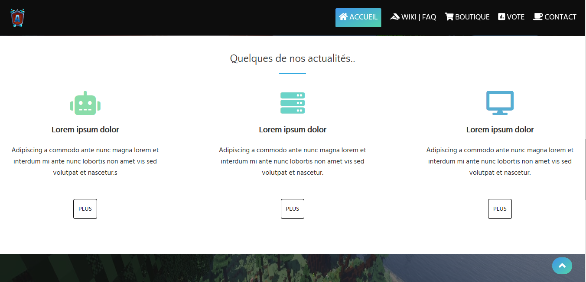

Mes projets 2020


Le sport fait partie de mon quotidien, je suis passionné d'athlétisme et de tennis de table. J'ajoute également que la planche à voile commence également a me divertir ;) En quelques années, j'ai pu me découvrir et me surpasser !
Le scoutisme est une activité unique car elle ma permis en 9 ans de pratique de me découvrir, on y apprend la survie, l'autonomie et la prise d'initiative. Sans le scoutisme, je ne serais pas ce que je suis aujourd'hui. Le scoutisme change la façon de voir les choses.
J'ai récemment publié un article sur le scoutisme,j'y explique le principe de cette activité et en quoi cela peut être utile
Le python est un des récents languages vers lesquels je me suis tourné, un language que j'utilise pour programmer des algorithmes et des petits jeux vidéos. Un language très simple à comprendre et à utiliser. Je ne regrette pas d'avoir suivi une petite formation sur celui-ci :)
J'ai commencé à apprendre le language de programmation php en 2019, il m'est utile pour le web et la gestion de serveur. Par exemple je l'utilise pour que toute personne puisse me contacter sur mes sites.